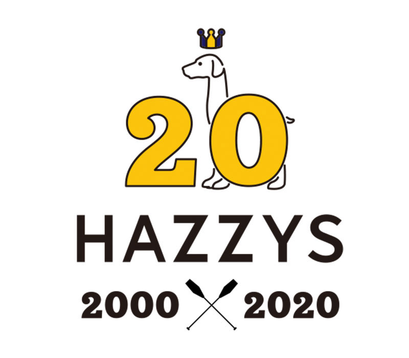

2020 HAZZYS HAPPY 20th birthday
THE HONOR
ANNIVERSARY

헤지스는 20년이라는 오랜 시간 동안 서울의 패션에서 시작해 한국, 아시아, 유럽, 미국을 넘어 세계로 영역을 넓혔다.
결과는 성공적이었고 반응은 긍정적이었다.
20년이라는 결코 짧지 않은 시간 속에서 일궈낸 성과 앞에서 완전하게 새로운 로고와 무늬를 선보인다.
헤지스의 곁에서 늘 동행한 친구이자 동료인 잉글리시 포인터는 마치 직접 손으로 그린 듯한 자연스러운 형태로 다시 태어났다.
불필요한 장식은 과감하게 덜어낸 채 단순하고 명료한 형태로 완성됐는데 오히려 더욱 짙은 인상을 남긴다.
무엇보다 스트라이프 무늬로 완성된 왕관을 쓰고 있는 모습은 씩씩한 기개를 자랑한다. 노란색과 감색을 기반으로 흰색과 검은색이 섞인 새로운 스트라이프 무늬 또한 마찬가지다.
선명하게 엮인 세 가지 색의 굵은 선들은 헤지스의 당차고 대범한 기개를, 이가 유연하게 교차되는 순간은 헤지스의 조화와 균형을 이루는 기질을 상징한다.
이 두 가지 로고와 무늬는 헤지스가 20년간 추구해온 브리티시 어바니티(British Urbanity)를 담는 중요한 지표다.
COLOR PALETTE
-
HAZZYS 20 Yellow
- RGB 215 / 296 / 113
- CMYK 6 / 29 / 89 / 0
- Pantone 116
-
HAZZYS 20 Dark Blue
- RGB 0 / 0 / 75
- CMYK 100 / 100 / 21 / 50
- Pantone 2738
-
HAZZYS 20
Black -
HAZZYS 20
White
HAZZYS
20년이라는 시간을 지나 새롭게 선보여지는 로고와 무늬가 곳곳에 아름답게 녹아들었다.